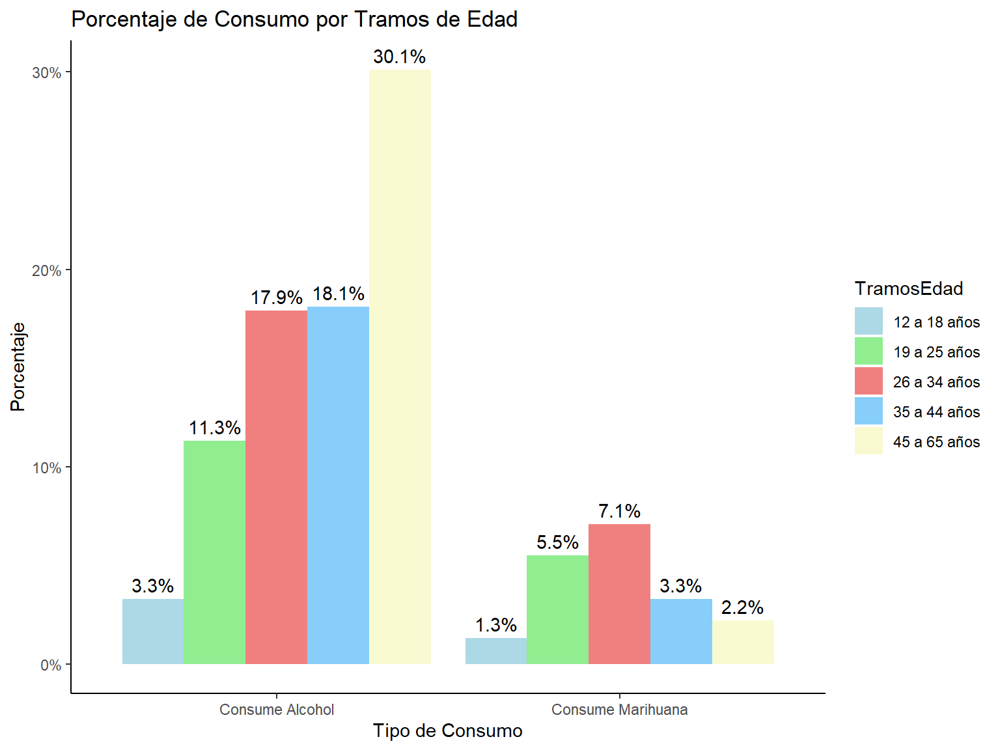
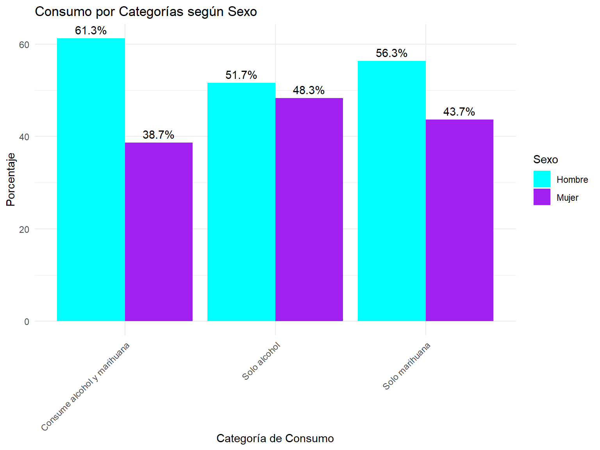
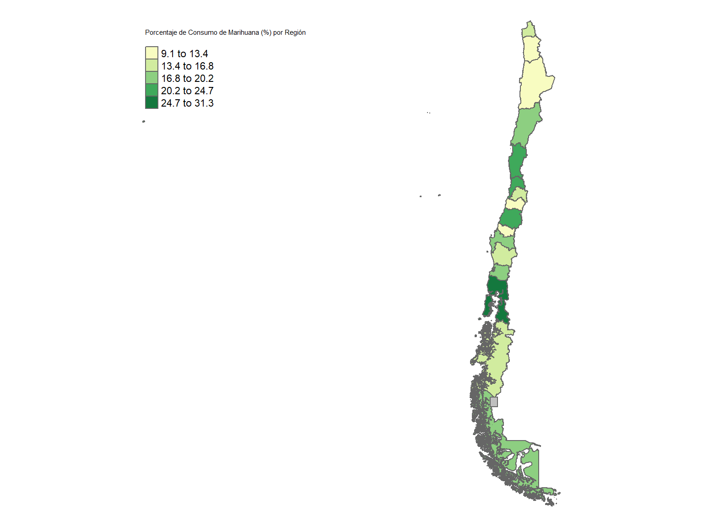

Warning: package 'dplyr' was built under R version 4.4.2Warning: package 'survey' was built under R version 4.4.2El consumo extendido de susbtancias psicoactivas, tales como el alcohol y la marihuna, constituye un problema de salud pública con consecuencias tanto en el sistema asistencial, como en la productividad a lo largo de la vida, el entorno social y familiar y la salud de las personas usuarias de este tipo de substancias (Altamirano Altamirano, Catalán Sandoval, y González Sepúlveda 2024)
El informe “El Consumo de Alcohol en Chile: Situación Epidemiológica” (Prevención y Rehabilitación del Consumo de Drogas y Alcohol (SENDA) 2024) destaca el consumo de alcohol como principal factor de riesgo que causa muerte y discapacidad en Chile, representando el 12,4% de los años de vida saludables perdidos por muerte o discapacidad (AVISA). Junto a lo anterior, también se señala la dependencia del alcohol como una de las cuatro principales enfermedades que generan carga de enfermedad en el país, explicando un 7,7% de los AVISA perdidos.
Adicionalmente, en el informe “Marihuana” (Prevención y Rehabilitación del Consumo de Drogas y Alcohol (SENDA) 2020) se destaca que Alrededor del 9% de los consumidores adultos desarrollan adicción a la marihuana. Este porcentaje aumenta al 17% si el consumo comienza en la adolescencia y al 25-50% en consumidores diarios. Además de los efectos adictivos, SENDA señala los efectos sobre la salud respiratoria, el incremento del riesgo de psicosis y el deficit cognitivo (particularmente en adolescentes), el desempeño académico y laboral, en términos de ausentismo y menor productividad y los riesgos cariovasculares.
En función de estos antecedentes, se vuelve relevante trazar una estrategia para la identificación de patrones latentes de consumo, percepción de riego y acceso, en personas usuarias de alcohol y marihuana en miras a:
A continuación, se presenta el objetivo general y los objetivos específicos del caso.
Identificar patrones latentes de consumo, percepción de riego, opinión pública y conductas de riesgo en la conducción en personas que declaran haber consumido alcohol y marihuna en el último año usando datos del Estudio Nacional de Drogas en Población General de Chile 2022.
Examinar las caracterísiticas sociodemográficas y la distribución regional de las personas que declaran haber consumido alcohol y/ o marihuana en el último año, asi como de otras variables críticas relacionadas con la percepción de riesgo, la opinión pública y conductas de riesgo en la conducción.
Identificar variables relevantes para la elaboración de grupos o perfiles de personas que declaran haber consumido alcohol y/ o marihuana en el último año a través de la extracción de características, aplicando el análisis de componentes principales (PCA)
Explorar las agrupaciones producto de la aplicación de de algoritmo de clustering jerarquico aglomerativo.
El presente proyecto se rige bajo el modelo ETL (Extract, Transform, Load) para el proceso de integración y gestión de datos y, particularmente, en la creación de Data Warehouses o sistema de análisis de datos. A continuación desglosaremos cada una de las etapas que lo componen:
Inicialmente, se trabajó con un conjunto de bases de datos dumy procedentes del Estudio Nacional de Drogas en Población General (ENPG 2022). Posteriormente, habiendo trabajado el objetivo de unión de bases de datos mediante la fundión fulljoint, se constató la perdida de un número relevante de casos. Particularmente, aquello que respondían a la categoría consumo de marihuna en el último año. Junto a lo anterior, ampliamos la exploración de variables de interés. Por esta razones, se decidió trabajar con la base original del ENPG 2022.
Esta base se encuentra disponible en: https://www.senda.gob.cl/senda-presenta-principales-resultados-del-15-estudio-de-drogas-en-poblacion-general/
Para la importación y exploración inicial de las bases de datos dummy y la ENPG 2022 original utilizamos los paquetes”readxl”, “haven” y “rio”.
Junto a estos paquetes instalamos: - Para la manipulación: “dplyr” - Para la elaboración de los estadísticos descriptivos: “psych”, “tidyr”, “table1”,“knitr”, “kableExtra” y “survey” - Para las visualizaciones: “corrplot”, “ggplot2”, “plotly”
Warning: package 'dplyr' was built under R version 4.4.2Warning: package 'survey' was built under R version 4.4.2A continuación se describe la serie de oporaciones realizadas para manipular nuestra base de datos final, es decir, la base ENPG 2022 original.
Se aplicó el factor de expasión especificado en la encuesta a la base de datos para poder trabajar con valores representativos a nivel nacional y regional
Se construyeron 2 variable de interés de tipo binario:
oh_rec: que incluyen a personas que declaran consumo de alcohol en el último mes o hace menos de un mes y más de un año
mar_rec: que contempla a personas que declaran consumo de marihuana en el últimos mes o hace menos de un mes pero menos de un año.
El resto de alternativas de las variables originales realtivas al consumo de alcohol y marihuana (Hace más de un año, No sabe -88-, No contesta -99- ) fueron recodificadas como valores NA. Este conjunto de valores fue extraido de las operaciones mediante la función ifelse.
Se recodificaron, y normalizaron algunas variables críticas adicionales que nos interesaba incluir en nuestro análisis:
Por último, se aplicaron técnicas de estandarización al conjunto de variables de interés utilizadas para la generación de clusters en base al algoritmo de jerarquización aglomerativa.
Nuestro Back Room o ambiente de trabajo donde se realizan todas las transformaciones, integraciones y armonizaciones de los datos es el presente repositorio de Github. Especificamente, nuestra carpeta data donde se enncuentra las base de datos ENPG 2022 original y las bases dumy.
En el caso de el Front Room o ambiente donde se comparten y publican los datos transformados y optimizados para consulta y análisis se ha generado la presente HTML producida en Github para la publicación de resultados.
Las variables seleccionadas para el presente proyecto se agupan en:
Variables de consumo de alcohol y marihuna:
consumo del alcohol durante los últimos 30 días y consumo de alcohol hace más de un mes pero menos de un año.
consumo de marihuana durante los últimos 30 días y consumo de marihuana hace más de un mes pero menos de un año.
Variables socio demográficas: edad, género, nivel socioeconómico y nivel educacional.
Variables de percepción de riesgo relacionadas al consumo de marihuana y/o alcohol.
Variables relacionadas a factores contextuales: consumo de drogas en el hogar ; dificultad en el acceso a la marihuana.
Nuestra variable de interés fue generada a apartir de personas que afirmaron haber consumido alguna vez en su vida alcohol y/o marihuana (oh_1 y mar_1). Apartir de esto, se creó una variable para identificar a quienes consumen solo alcohol, solo marihuana y quienes consumen de ambos durante el último año (oh_4 y mar_4).
De esto, se identifica que el 64% de las personas consume solo alcohol, un 4% solo marihuana y un 32% consume alcohol y marihuana.
| Tipo de Consumo | Número de observaciones | Porcentaje |
|---|---|---|
| Consume Marihuana | 1362277 | 10.6 |
| Consume Alcohol | 6860200 | 53.2 |
A raíz de esto de analizaron variables sociodemograficas cruzadas sobre el tipo de consumo. Las variables sociodemográficas fueron sexo, edad, niveles de educación y tramos de ingreso. También otras variables como percepción de riesgo, accesibildiad y consumo en conducción.
Los datos descriptivos de la base nos muestra que en promedio hay más mujeres que hombres y que sobre el tipo de consumo se identifica que: Sobre consumos de ambos alcohol y marihuana, los hombres consumen más que las mujeres (63% y 37% respectivamente). Sobre solo un tipo de consumo los valores se invierten, los hombres consumen en medida más solo alcohol, mientras que las mujeres consumen en medida solo marihuana.
| Tipo de Consumo | Hombre | Mujer |
|---|---|---|
| Consume Alcohol | 42% | 38.7% |
| Consume Marihuana | 12.5% | 6.8% |

La variable de edad en pro de temas de análisis fue agrupada en Tramos de edad en base a información del informe oficial de la Encuesta Nacional de Drogas 2022. Los datos iniciales descriptivos de Edad nos muestra que la media de edad de la encuesta son 42 años, una desviación estándar de 15,24 ampliandose relativamente alrededor de la media, y una skew de -0,11 lo que significa que hay un leve sesgo hacia edades más jovenes.
En cuanto al tipo de consumo: Los tramos de edad que consumen más alcohol y marihuana son las personas de 26 a 34 años con un 37%, mientras quienes menos consumen ambos son personas de 12 a 18 años con un 4%. Esto tiene sentido debido a las leyes en Chile donde está prohibido que menores consuman algún tipo de droga. En cuanto a personas que consumen solo alcohol son las personas mayores de 45 a 65 años con un 34%, mientras que los tramos edad que consumen solo marihuana son las personas de 26 a 34 años con un 31%

Sobre el nivel educacional y el consumo de Alcohol y Marihuana hemos observado patrones bastantes llamativos sobre el nivel educacional. La variable original DP_12 fue recodificada y agrupada en grupos para facilitar el análisis, siendo codificadas en grupos de “Sin educación”, “sistema antiguo” y educación básica, media, técnica, universitaria y postgrados.
Estos resultados si bien pueden no ser tan representativos debido al número de casos que compone cada grupo, siendo los niveles de mayor educación los grupos con menor casos, mientras que niveles básicos y medios contemplan una mayor cantidad de personas.
Las personas que consumen en mayor medida alcohol y marihuana son las personas con un nivel educacional media con un 35%, mientras quienes menos consumen ambos tipos son las personas sin educación con 0,1%. Sobre los grupos que consumen mayor alcohol son nuevamente personas con educación media con un 37%, y personas que consumen solo marihuana sigue la misma tendencia de educación con 39%.
| Tipo de Consumo | Sin educación | Sistema antiguo | Educación básica | Educación media | Técnico | Universitaria | Postgrado |
|---|---|---|---|---|---|---|---|
| Consume Alcohol | 0.1% | 4.4% | 5.9% | 31.6% | 12.6% | 22.8% | 3.3% |
| Consume Marihuana | 0% | 0.8% | 1.2% | 7.1% | 3.3% | 6.3% | 0.6% |
Observando los datos según tramos de ingresos, estos fueron agrupados en nivel socioeconomicos bajo, medio y alto. El informe de SENDA (2022) categoriza el nivel socioeconomico en a la calidad de la vivienda y el barrio. En nuestra investigación la justificación de variable de nivel socioeconomica será en base al tramo de ingresos que se encuetra la persona de la variable (DP_16).
Sobre los grupos socioeconomicos que consumen ambos tipos son en mayor medida las personas de nivel socioeconómico medio 45%, y que también son quienes más consumen solo alcohol 47%. Respecto al consumo de solo marihuana son las personas de nivel socioeconómico bajo quienes más consumen con un 49%.
| Tipo de Consumo | Nivel socioeconomico Bajo | Nivel socioeconomico Medio | Nivel socioeconomico Alto |
|---|---|---|---|
| Consume Alcohol | 29.8% | 38.3% | 12.6% |
| Consume Marihuana | 7.3% | 9% | 2.9% |

Reading layer `Regional' from data source
`C:\Users\natal\OneDrive - Universidad Alberto Hurtado\PERSONAL\DIPLOMADO DATA SCIENCE\CAPSTONE\proyecto_capstone_AA_NV\proyecto_capstone_AA_NV\Regiones'
using driver `ESRI Shapefile'
Simple feature collection with 17 features and 7 fields
Geometry type: MULTIPOLYGON
Dimension: XY
Bounding box: xmin: -12184470 ymin: -7554436 xmax: -7393642 ymax: -1978920
Projected CRS: WGS 84 / Pseudo-Mercator [1] "Región de Arica y Parinacota"
[2] "Región de Tarapacá"
[3] "Región de Antofagasta"
[4] "Región de Magallanes y Antártica Chilena"
[5] "Región de Aysén del Gral.Ibañez del Campo"
[6] "Región de Atacama"
[7] "Región de Coquimbo"
[8] "Región de Valparaíso"
[9] "Región Metropolitana de Santiago"
[10] "Región de Los Lagos"
[11] "Región de Los Ríos"
[12] "Región de La Araucanía"
[13] "Región del Bío-Bío"
[14] "Región de Ñuble"
[15] "Región del Maule"
[16] "Región del Libertador Bernardo O'Higgins"
[17] "Zona sin demarcar" [1] "Región Metropolitana de Santiago"
[2] "Región de Antofagasta"
[3] "Región de Arica y Parinacota"
[4] "Región de Atacama"
[5] "Región de Aysén del General Carlos Ibáñez del Campo"
[6] "Región de Coquimbo"
[7] "Región de La Araucanía"
[8] "Región de Los Lagos"
[9] "Región de Los Ríos"
[10] "Región de Magallanes y de la Antártica Chilena"
[11] "Región de Tarapacá"
[12] "Región de Valparaíso"
[13] "Región de Ñuble"
[14] "Región del Biobío"
[15] "Región del Libertador General Bernardo O'Higgins"
[16] "Región del Maule" 
Simple feature collection with 8 features and 9 fields
Geometry type: MULTIPOLYGON
Dimension: XY
Bounding box: xmin: -12184470 ymin: -7554436 xmax: -7393642 ymax: -2147481
Projected CRS: WGS 84 / Pseudo-Mercator
objectid cir_sena codregion area_km st_area_sh st_length_
2 1085 2 1 42284.57 48306372203 1213713.1
4 1087 15 12 133053.14 358131609833 90498303.6
5 1088 14 11 106703.38 224274263072 41444810.6
6 1089 4 3 75661.25 96439063562 2401740.7
7 1090 5 4 40575.90 54980818749 2065933.1
8 1091 6 5 16322.97 23014748571 1679609.2
10 1093 13 10 48408.37 87718341940 7874157.9
16 1099 8 6 16349.03 24090278437 984852.6
Region Alcohol (%)
2 Región de Tarapacá 90.9
4 Región de Magallanes y de la Antártica Chilena 79.9
5 Región de Aysén del General Carlos Ibáñez del Campo 84.7
6 Región de Atacama 81.7
7 Región de Coquimbo 75.3
8 Región de Valparaíso 76.6
10 Región de Los Lagos 68.7
16 Región del Libertador General Bernardo O'Higgins 86.6
Marihuana (%) geometry
2 9.1 MULTIPOLYGON (((-7810214 -2...
4 20.1 MULTIPOLYGON (((-7494058 -7...
5 15.3 MULTIPOLYGON (((-8413518 -6...
6 18.3 MULTIPOLYGON (((-7932748 -3...
7 24.7 MULTIPOLYGON (((-7963269 -3...
8 23.4 MULTIPOLYGON (((-8991646 -3...
10 31.3 MULTIPOLYGON (((-8331768 -5...
16 13.4 MULTIPOLYGON (((-8002301 -4...Simple feature collection with 8 features and 9 fields
Geometry type: MULTIPOLYGON
Dimension: XY
Bounding box: xmin: -12184470 ymin: -7554436 xmax: -7393642 ymax: -2147481
Projected CRS: WGS 84 / Pseudo-Mercator
objectid cir_sena codregion area_km st_area_sh st_length_
2 1085 2 1 42284.57 48306372203 1213713.1
4 1087 15 12 133053.14 358131609833 90498303.6
5 1088 14 11 106703.38 224274263072 41444810.6
6 1089 4 3 75661.25 96439063562 2401740.7
7 1090 5 4 40575.90 54980818749 2065933.1
8 1091 6 5 16322.97 23014748571 1679609.2
10 1093 13 10 48408.37 87718341940 7874157.9
16 1099 8 6 16349.03 24090278437 984852.6
Region Alcohol (%)
2 Región de Tarapacá 90.9
4 Región de Magallanes y de la Antártica Chilena 79.9
5 Región de Aysén del General Carlos Ibáñez del Campo 84.7
6 Región de Atacama 81.7
7 Región de Coquimbo 75.3
8 Región de Valparaíso 76.6
10 Región de Los Lagos 68.7
16 Región del Libertador General Bernardo O'Higgins 86.6
Marihuana (%) geometry
2 9.1 MULTIPOLYGON (((-7810214 -2...
4 20.1 MULTIPOLYGON (((-7494058 -7...
5 15.3 MULTIPOLYGON (((-8413518 -6...
6 18.3 MULTIPOLYGON (((-7932748 -3...
7 24.7 MULTIPOLYGON (((-7963269 -3...
8 23.4 MULTIPOLYGON (((-8991646 -3...
10 31.3 MULTIPOLYGON (((-8331768 -5...
16 13.4 MULTIPOLYGON (((-8002301 -4... [1] TRUE TRUE TRUE TRUE TRUE TRUE TRUE TRUE TRUE TRUE TRUE TRUE TRUE TRUE TRUE
[16] TRUE TRUE
En este apartado se presentan visualización sobre nuestros datos de interés y los cruces sociodemográficos.
En cuanto a la variable sexo, los hombres lideran el consumo en las tres categorías, consumo de alcohol y marihuana, consumo exclusivo de alcohol y consumo exclusivo de marihuana. Sin embargo, en la categoría de consumo simultaneo de alcohol y marihuana, existe mayor disparidad en la composición por sexo; el consumo de ambas substancias está más presente en hombres (61,3%) que en mujeres (38,7%).
Sin embargo, en la categoría de consumo exclusivo de alcohol, el consumo de mujeres (48,3%) y hombres (51,7%) se encuentra más cercano.
Respecto al consumo de alcohol y marihuana en relación a los tramos etarios es posible realizar el segundo desglose según substancia: - Consumo simultaneo de alcohol y marihuana: la mayor prevalencia de este tipo de consumo se da en las personas con edades comprendidas entre 26 y 34 años (38,4%), seguidas de aquellas entre 19 y 25 años (25,1%) - Consumo exclusivo de alcohol: este tipo de consumo es más prevalente en personas entre los 45 y 65 años (34,2%) - Consumo exclusivo de marihuana: si bien los porcentajes de prevalencia de este tipo de consumo por cohorte etaria no son tan dispares, el grupo etario que muestra mayor consumo exclusivo de marihuana es el conformado por personas entre 35 y 44 años (28,2%). Junto a lo anterior, llama particularmente la atención la prevalencia del consumo de marihuana en menores de edad (9,9% del total de la composición etaria de este grupo de personas consumidoras)
Por último, en relación a la frecuencia relativa de consumo de alcohol y/o marihuana según nivel socioeconómico, caben destacar los siguientes hallazgos. (1) La personas que pertenecen al nivel socioeconómico medio y bajo poseen prevalencias de consumo simultaneo similares, con un 43,9% y un 42,1% respectivamente. (2) En el consumo exclusivo de alcohol predomina el grupo socioeconómico medio (46,9%), mientras que cuando se trata de consumo exclusivo de marihuana la mayor frecuencia se da en el nivel socioeconómico más bajo (49,2%).
Otras variables de interés para generar posibles clusters son: Percepción de riesgo, accesibilidad y conducción y tratamiento. Estas variables fueron seleccionadas solo las que hacen referencia sea a alcohol o marihuana, ya que existen otras categorías sobre otros tipos de droga.
Las variables fueron recodificadas de variables categoricas a variables binarias para faciltiar el análsis. Estas recodificaciones fueron hechas en base a la presentación de resultados de SENDA (2022).
Dentro de estas variables se encuentra la percepción de riesgo de consumir ciertos tipos de drogas o la frecuencia de consumo de estos. Para esta variable se transformo de una variable categorica (4 categorías) a una variabla binaria (2 categorías), donde los valores 1,2,3 fueron catalogados como “Ningún o algo de riesgo”, mientras que el valor 4 fue catalago como “Gran riesgo”. A partir de esto se identificaron las principales hábitos que pueden tener un gran riesgo de alcohol y marihuana.
| Percepción de riesgo | Gran riesgo |
|---|---|
| Tomar más de 5 tragos diarios | 89.5 |
| Fumar marihuana frecuentemente | 72.7 |
| Tomar más de 3 tragos ocasional | 45.0 |
| Marihuana de forma experimental | 42.4 |
A los encuestados se le realizaron sobre su nivel de acuerdo en temas de consumo, legalización y penalización de drogas. Para esta variable también fue recodificada de forma binaria para facilitar su análisis. Donde los valores 3 y 4 fueron dejados como No estoy de acuerdo, mientras que valores 1 y 2 fueron catalogados como Estoy de acuerdo. Es esta tabla se presentan donde hay mayores niveles de acuerdo según diversos temas:
| Frase | Estoy de acuerdo |
|---|---|
| Permitir el uso de Marihuana para fines terapéuticos | 82.4 |
| La mayoría de jóvenes consume Marihuana | 71.6 |
| Dar la misma pena a quienes trafican Marihuana como los que trafican cocaína o pasta base | 60.9 |
| Penalizar el porte y consumo de marihuana aunque sea en pequeñas cantidades y para uso personal | 55.7 |
| La Marihuana debería ser legal para mayores de 18 años | 47.6 |
| La Marihuana produce menos daño que el Alcohol | 41.5 |
| Ha conducido | Sí lo he hecho |
|---|---|
| Ha manejado despúes de beber Alcohol | 3.9 |
| Ha manejado después de fumar Marihuana | 1.2 |
Realizar selección agregar región quizá un mapa